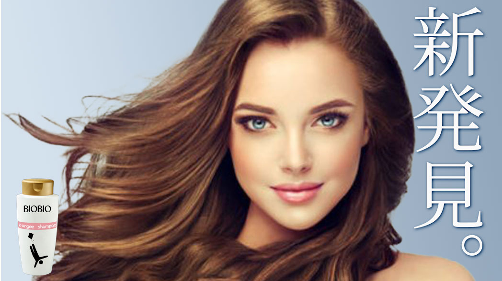
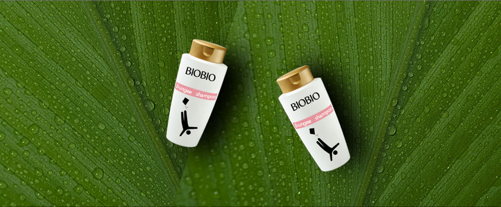
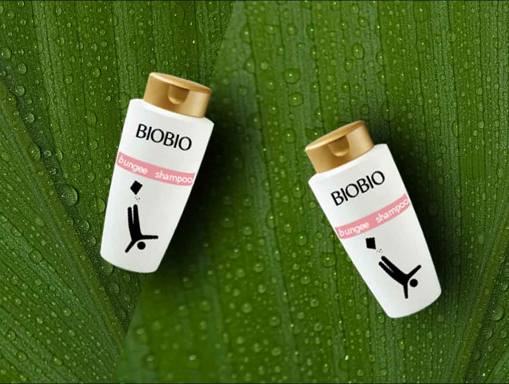
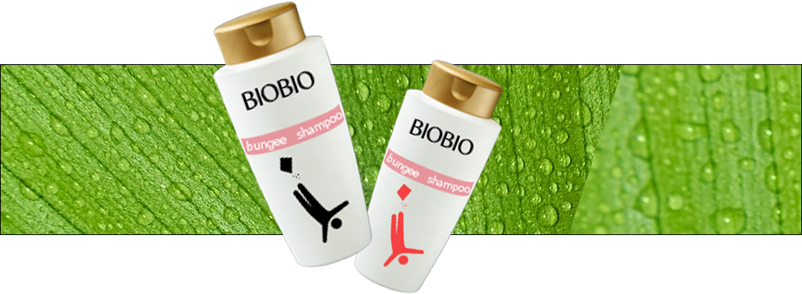
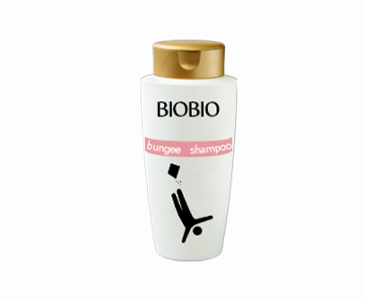
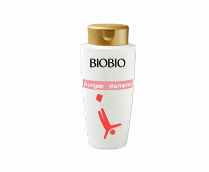

100%天然由来のオーガニックシアバター配合。
ヴィーガンフレンドリー処方のヴィーガにーシリーズ誕生！
ヴィーガンフレンドリー処方のヴィーガにーシリーズ誕生！

BIOBIO
うるおう、まとまる、
ヴィーガンフレンドリー処方の
新発想シアバンテージシャンプー
保湿の王様・シアバターが髪に溶け込むように
浸透してうるおいを補うとともに、
蒸発しにくい油膜のヴェールで包んで、
まるで見えない包帯のように
髪表面のダメージを乾燥から保護。
未体験のとろけるような指どけの、
しっとりしなやかな髪へと導きます



Moist
しっとりしなやかな質感で、
24時間まとまる髪へ
24時間まとまる髪へ
繰り返す毛先のパサつきも、長時間しっとりまとまる。


SS ビオリス ヴィーガニー
ボタニカル シャンプー
（モイスト）
本体480mL ／ つめかえ340mL
100%天然由来のオーガニックシアバターとボタニカル由来のアミノ酸系洗浄成分配合。ヴィーガンフレンドリー処方で、やさしく洗ってしっとりしなやかにまとまる髪へ。優美で清らかなローズ＆カシスの香り。

SS ビオリス ヴィーガニー
ボタニカル シャンプー
（モイスト）
本体480mL ／ つめかえ340mL
100%天然由来のオーガニックシアバターとボタニカル由来のアミノ酸系洗浄成分配合。ヴィーガンフレンドリー処方で、やさしく洗ってしっとりしなやかにまとまる髪へ。優美で清らかなローズ＆カシスの香り。
SS ビオリス ヴィーガニー
ボタニカル シャンプー
（モイスト）
本体480mL ／ つめかえ340mL
100%天然由来のオーガニックシアバターとボタニカル由来のアミノ酸系洗浄成分配合。ヴィーガンフレンドリー処方で、やさしく洗ってしっとりしなやかにまとまる髪へ。優美で清らかなローズ＆カシスの香り。
SS ビオリス ヴィーガニー
ボタニカル シャンプー
（モイスト）
本体480mL ／ つめかえ340mL
100%天然由来のオーガニックシアバターとボタニカル由来のアミノ酸系洗浄成分配合。ヴィーガンフレンドリー処方で、やさしく洗ってしっとりしなやかにまとまる髪へ。優美で清らかなローズ＆カシスの香り。